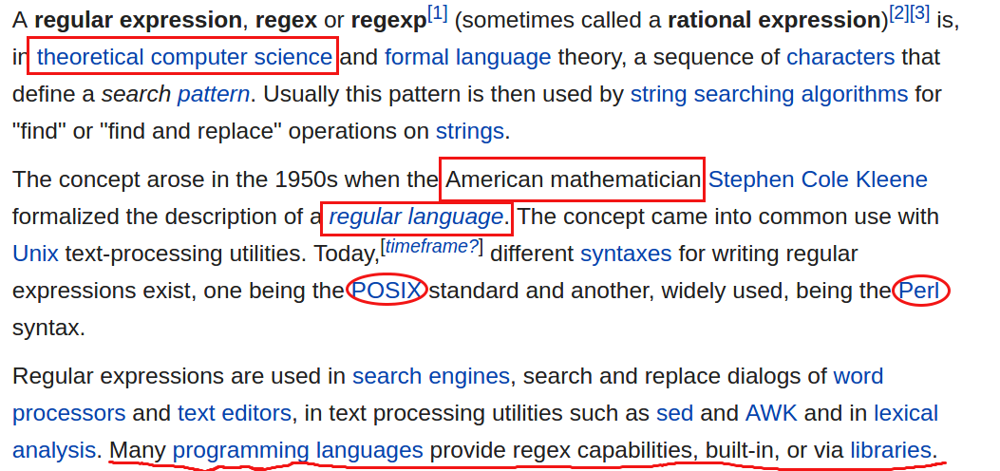

实习第五周。这周的主要工作内容是协助开发和QA跑case，由于最近我所在的组任务不多，大家的工作主要是修修补补，或者是增加一些小功能。实习了一个多月，目前为止收获最大的地方就是更加熟悉了Linux开发，这点能从我最近写的实习总结中看出来。
周四，leader让我把在线航空公司常见的接口错误统计出来，也就是把航司的错误从日志中搂出来，需要写shell脚本来实现，简单记录一下。
先上脚本：
|
|
atnodes 把{hostname1}[3-4] {hostname2}[3-6]这些机器上的日志全都取出来，当然要通过zgrep正则表达式的过滤，不然日志太多，最后把得到的日志写到文件icaair_provider.log里。
awk是一个强大的文本分析工具，它把文件逐行读入，按照分隔符(默认空格)将每行切片，然后再对切开的部分进行各种分析处理，非常适合处理日志数据。具体见这篇文章。总之第二行就是根据第一步得到的文件icaair_provider.log切分日志，得到想要的那一列，然后用sort排序，最后写入文件icaair_provider.code里。
最后一行，用uniq统计在icaair_provider.code中的所有错误出现的次数。
Note:
这里我要说的是写正则表达式需要注意的问题。首先看看维基百科是怎么描述正则表达式的。

总结起来就是，正则表达式是一个美国数学家搞出来的一门语言，也可以说是一门科学。你想啊，它能被称作是科学，一定是严谨的正确的不容质疑的，但是它偏偏有两套标准，也可以叫两套语法，分别是POSIX standard和Perl syntax。这两套语法都是对的，按照任何一个语法写出来的正则都是对的。重点是最后一句话，很多编程语言提供对正则表达式的支持，或者内置，或者通过引用包。举个例子来讲，上帝说，人要住在房子里，于是给出房子的定义：能遮风挡雨抵挡野兽的建筑就是房子。虽然有了房子的定义，但是不够具体，于是上帝手下的两个天使开始制定标准，也就是POSIX和Perl。至于编程语言就是建房子的工人，它按照制定的标准实现了正则表达式，但是每个编程语言实现正则的方式方法不尽相同。
理解了这点就明白了为什么我在http://regexr.com/ 上写的正则明明是对的为啥放在java里或者shell里就不好使了。http://regexr.com/ 是对正则标准的检查，它不是language-specific的。
最后记录一段脚本，功能是统计file2中的每行在file1中出现的次数。
|
|
最后的最后，总结bash脚本里面大于/等于…关键词:
| Item | Value |
|---|---|
| -eq | 等于 |
| -ne | 不等于 |
| -le | 小于等于 |
| -ge | 大于等于 |
| -lt | 小于 |
| -gt | 大于 |
Written with StackEdit.